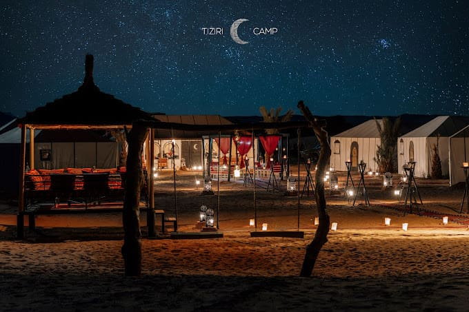
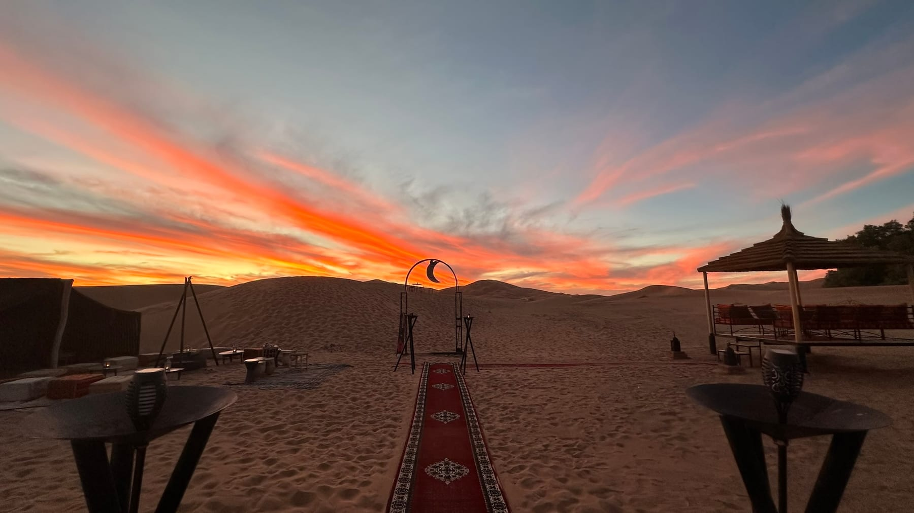
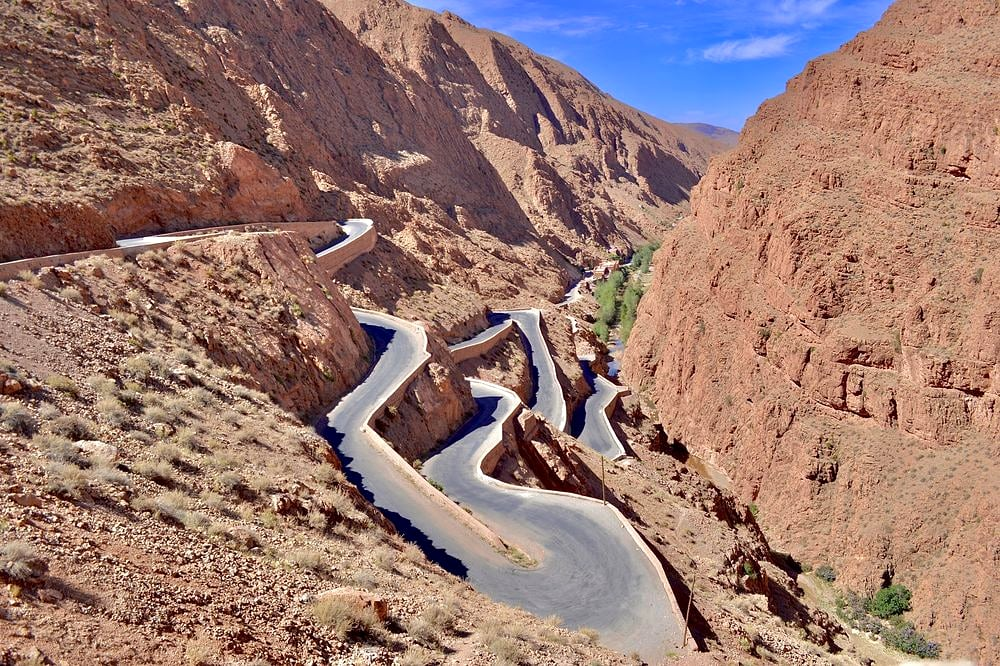
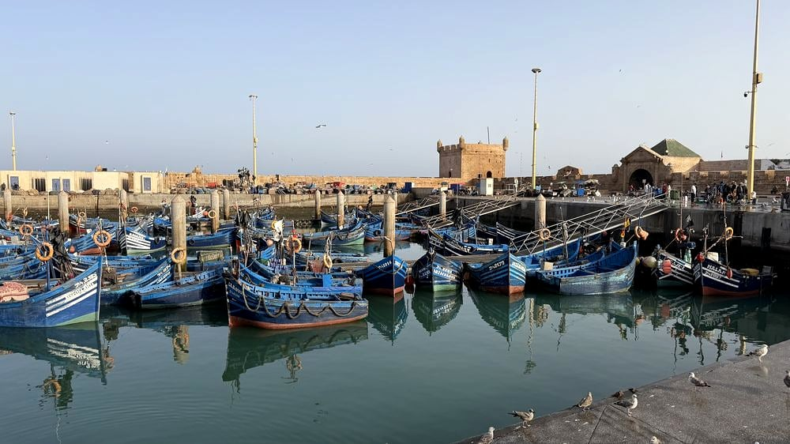

The short answer: Yes, Morocco is well worth visiting in winter. From December to February, days in Marrakech and the Sahara are usually sunny and mild, around 18–22°C. Nights are cold, and desert camps can drop close to freezing. Outside the busy Christmas–New Year fortnight it's one of the quietest times of the year. Mid-January to early February is often the sweet spot. Pack warm layers and allow some flexibility in case snow closes the Atlas passes.
Winter is Morocco's best-kept secret. While northern Europe and North America sit under grey skies, Marrakech has blue skies and warm sunshine at lunchtime, the High Atlas is capped with snow, and the Sahara is at its clearest and calmest. There are some trade-offs: short days, cold nights and the occasional snow on a mountain pass. Once you know what to expect, all of them are easy to plan around.
What's the Weather Like in Morocco in Winter?
Morocco is a country of mountains, desert and two coastlines, so “winter weather” depends heavily on where you are. Here's a guide to typical conditions from December to February:
| Region | Typical daytime | Typical night | What it feels like |
|---|---|---|---|
| Marrakech | 18–22°C | 5–8°C | Sunny, T-shirt lunches, jacket evenings. Rain is occasional. |
| Sahara (Merzouga) | 17–21°C | 0–5°C | Dry and bright, with clear skies. Nights are properly cold. |
| Fes & Meknes | 14–17°C | 4–6°C | Cooler and damper. Some grey or rainy days. |
| Chefchaouen & the Rif | 13–16°C | 4–6°C | Morocco's wettest region in winter. Riads can feel chilly. |
| High Atlas passes | Often near 0–8°C | Below freezing | Snow is possible, especially from January to March. |
| Essaouira & the coast | 17–20°C | 9–11°C | The mildest nights, but often windy. |
These are typical ranges; individual weeks can be warmer or colder. Wherever you are, the sun sets early, before 6pm in the south.
Morocco in Winter, Month by Month
December: festive peak, then a quieter start
Early December is calm, with shorter days and pleasant sightseeing weather. From around 20 December to the first days of January, Morocco has one of its busiest periods of the year. European families arrive for the holidays, desert camps fill up and some riads charge peak rates. If you want to be in the Sahara for Christmas or New Year, book as early as possible. Many of the better camps are full by early autumn.
January: coldest nights, clearest skies, fewest crowds
Once the holiday visitors leave, January is one of the quietest months of the year. The nights are at their coldest, but the air is crisp and dry, and on a clear night the desert sky is spectacular. On 14 January, Morocco celebrates Yennayer, the Amazigh (Berber) New Year, which became an official national holiday in 2024. It's a nice cultural moment to be traveling through Berber villages in the Atlas and the south.
February: longer days and the first signs of spring
The days get noticeably longer and warmer through February, and almond trees start to blossom in the valleys. It's a lovely month for the Sahara and the southern kasbah route. In 2027, Ramadan is expected to begin around 8 February and run to around 9 March, depending on the moon sighting. Tours run as normal during Ramadan, but some local restaurants keep shorter daytime hours and the evenings take on a festive, communal feel after sunset. Let us know if your dates overlap, and we'll plan around it.

The Sahara in Winter: What a Desert Night Really Feels Like
Winter is a wonderful time for the desert, as long as you're prepared for the cold. The camel trek into camp is comfortable in the soft, low afternoon light, with none of summer's heat. Because the sun sets early, treks usually leave mid to late afternoon, and you'll reach camp around dusk.
Once the sun goes down, the temperature drops quickly. Sand doesn't hold heat, and with no cloud cover the desert can go from pleasant to near freezing in a couple of hours. Here's what helps:
- Choose your camp carefully. Better camps have proper beds, heavy wool blankets, and tents with private bathrooms and hot showers. Some luxury camps also heat their tents. It's worth asking before you book.
- Gather round the fire. Dinner is followed by music around the campfire, and that's where the evening is spent. See our guide to a night in a Sahara desert camp for what to expect.
- Get up for sunrise anyway. It's cold at 7am, but watching the first light hit the Erg Chebbi dunes is worth it. Wear a hat, gloves and every layer you've brought.
For a year-round view of the desert, see our best time to visit the Sahara guide. If you're still deciding which desert to visit, read our comparison of Merzouga, Zagora, Erg Chigaga and Agafay.

Snow in the Atlas Mountains: Will It Affect My Trip?
Every route from Marrakech to the Sahara crosses the High Atlas, most often on the Tizi n'Tichka pass at around 2,260 metres. The route from Fes crosses the Middle Atlas near Ifrane and Azrou. Both can get snow in winter, most often from January to March.
In practice, disruption is usually short. The roads are cleared quickly and normally reopen within about a day. With a private driver, a snowy day just means changing the order of the plan: spending an extra night in Marrakech or Ouarzazate, or waiting for the snowplows over a long lunch. On a fixed group tour, the whole schedule has to wait.

The snow brings good things too. The High Atlas looks its most dramatic when it's white against a blue sky. If you'd like to see it up close, the ski area at Oukaïmeden, about 75 km from Marrakech, usually has snow from roughly January to March, depending on the year.
Christmas and New Year in Morocco
Christmas isn't a public holiday in Morocco, but you'll hardly notice: hotels and riads in Marrakech are used to hosting holiday visitors. New Year's Eve is when many travelers head for the Sahara, and plenty of desert camps put on a special dinner with music around the fire. It's a memorable way to see in the year. Our advice:
- Book your desert nights by September or October for travel between Christmas and New Year.
- Expect higher demand, and some supplements, at camps and riads over the holidays.
- Consider arriving just after New Year. By the first week of January the crowds have gone and the weather is the same.
The Best Winter Routes Through Morocco
Winter favors the south, with its sunny days, and trips that keep time in the damp north to a minimum. These routes work particularly well:
- Marrakech and the Sahara, 4–7 days. Our 4-day Atlas Mountains & Sahara tour is ideal for a short winter-sun break. The 7-day Grand Sahara tour covers the same desert highlights at a more relaxed pace, adding the palm-filled Skoura Oasis and quiet nights in the Ourika Valley.
- Desert and coast, 12 days. The Grand Circuit from Marrakech finishes in Essaouira, where the Atlantic keeps winter nights mild.
- Imperial cities and the Sahara, 8 days. Fes is cooler in winter, but its medina is atmospheric in any weather. The 8-day Fes to Marrakech journey crosses the Middle Atlas and the Sahara from north to south.
If you'd like a gentler winter pace, with fewer long driving days and more nights in each place, our tailor-made trips can be designed around shorter daylight hours.

What to Pack for Morocco in Winter
- Layers: T-shirts for midday, a fleece or sweater, and a warm down jacket for evenings and the desert
- Hat, gloves and a scarf for the desert night and sunrise
- Warm sleepwear and socks. Traditional riads with stone floors and open courtyards can feel cold at night
- A light waterproof for Fes, Chefchaouen and the coast
- Sunglasses and sunscreen. The winter sun is still strong, especially in the mountains
- Comfortable closed shoes for medina cobbles and cold sand
For a complete list, see our guide to packing for the Atlas Mountains and the Sahara.
Winter in Morocco: Pros and Cons
Why winter works
- Sunny, comfortable days for sightseeing and the camel trek
- Quiet sites and medinas outside the holiday weeks
- Snow-capped Atlas views and exceptional stargazing
- Easier availability at popular riads and camps in January and February
What to plan around
- Cold nights, especially in the desert and in older riads
- Short days, with sunset before 6pm, so long drives need an early start
- Occasional snow on the mountain passes, usually cleared within a day
- High demand and prices over Christmas and New Year
Thinking about a winter trip? Tell us your dates, and we'll suggest a route that makes the most of the sunshine and gets you to the dunes on the clearest nights.